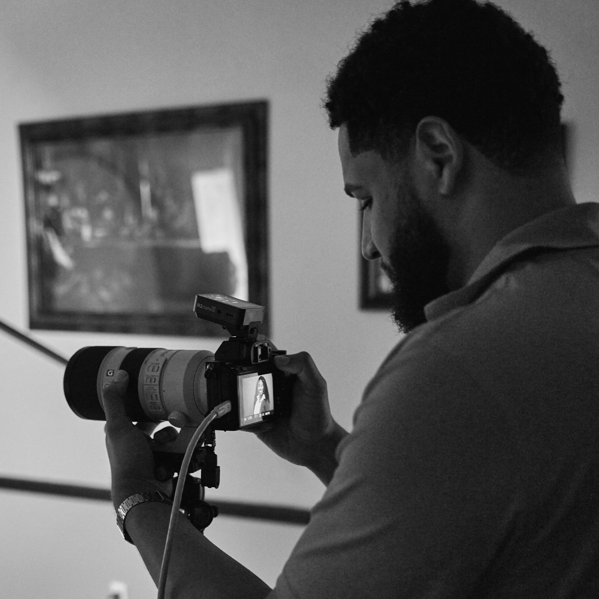

Video para negocios · Orlando, FL
Video que te pone a la vista.
Reels, TikToks, videos de marca y video de eventos para negocios en Orlando. Planeamos lo que vas a decir, te dirijo frente a la cámara y te entrego videos listos para publicar, en español, en inglés o en los dos.

Qué grabo
Tres tipos de video. Un objetivo: que te encuentren.
Contenido para redes
Reels, TikToks y Stories grabados con celular para que se vean naturales. Verticales, editados y listos para subir, sin que tengas que grabarte tú.
Videos de marca
Tu video de quiénes somos, la explicación de tus servicios, la historia de tu negocio y testimonios de clientes. Los videos que cierran la venta en tu web.
Video de eventos
Resúmenes de conferencias y eventos de empresa, clips de oradores y videos destacados para publicar la misma semana.
Para el mercado latino
Habla con tus clientes en su idioma.
Si tus clientes te escriben por WhatsApp y te siguen en Facebook e Instagram, un video en español les habla directo. Puedes grabar la misma idea en los dos idiomas el mismo día y tener contenido para los dos públicos.
- Contenido para redesGrabado con celular · vertical
- Videos de marca y eventosEquipo de cine profesional
- Formatos9:16 · 1:1 · 16:9
- IdiomaEspañol e inglés
Cómo trabajamos
Primero la idea. Después la cámara.
Llamada
Hablamos de tus metas, tus plataformas y dónde van a vivir los videos. Recibes la cotización en menos de 24 horas.
Plan
Las primeras frases, los puntos clave y la lista de tomas, para no improvisar el día de la grabación.
Grabación
En tu negocio, en tu evento o en un estudio en Orlando. Te dirijo frente a la cámara.
Edición y entrega
Videos editados en el tamaño de cada plataforma, listos para publicar o pasarle a tu equipo.
Precio
Se cotiza por proyecto.
Depende de cuántos videos necesitas, cuánto dura la grabación y cuánta edición lleva cada uno. Cuéntame en una llamada gratis y te mando la cotización en menos de 24 horas. Un depósito del 50 % aparta tu fecha.
Fotos y video juntos
Un día, todo cubierto.
Agrega fotos de marca o fotografía comercial al mismo día de grabación.
Reseñas en Google · 5.0 ★
Clientes sobre trabajar con GLPX.
“Se tomó el tiempo para entender mi marca, mi visión y el mensaje que quería comunicar con mis fotos. No solo toma fotos: le da vida a tu marca con imágenes que cuentan una historia.”
“GLPX Studio es, sin duda, el mejor fotógrafo de Orlando. Su ojo para los detalles, la luz y la forma de contar historias está a otro nivel.”
Reseñas originales en inglés, traducidas al español. Lee todas las reseñas en Google →
Preguntas frecuentes
Antes de grabar.
¿Qué tipo de videos hacen?
Tres tipos: contenido para redes (Reels, TikToks y Stories), videos de marca para tu web (quiénes somos, explicación de servicios, testimonios de clientes) y video de eventos (resúmenes y clips de oradores).
¿Los videos pueden ser en español?
Sí. Escribimos los guiones y grabamos en español, en inglés o en los dos, según tu público. Te dirijo frente a la cámara en el idioma que prefieras.
No me siento cómodo frente a la cámara. ¿Igual funciona?
Sí. Planeamos los temas y las primeras frases antes de grabar, y te dirijo toma por toma. No necesitas memorizar un guion ni ser natural frente a la cámara.
¿Puedo hacer fotos y video el mismo día?
Sí, y es lo que más recomiendo. Con un solo plan y un solo día tienes fotos y videos que combinan para tu web, tus anuncios y tus redes.
¿Cuánto cuesta?
Se cotiza por proyecto: depende de cuántos videos necesitas, cuánto dura la grabación y cuánta edición lleva cada uno. Cuéntame en una llamada gratis y te mando la cotización en menos de 24 horas. Un depósito del 50 % aparta tu fecha.
Siguiente paso